용접기능사 (2014-10-11 기출문제)
1과목: 용접일반
1. 차축, 레일의 접합, 선박의 프레임 등 비교적 큰 단면을 가진 주조나 단조품의 맞대기 용접과 보수용접에 주로 사용되는 용접법은?
- 서브머지드 아크 용접
- 테르밋 용접
- 원자 수소 아크 용접
- 오토콘 용접
(정답률: 76%)

2. 용접부 시험 중 비파괴 시험 방법이 아닌 것은?
- 피로 시험
- 누설 시험
- 자기적 시험
- 초음파 시험
(정답률: 77%)
3. 불활성 가스 금속 아크 용접의 제어장치로써 크레이터 처리 기능에 의해 낮아진 전류가 서서히 줄어들면서 아크가 끊어지는 기능으로 이면용접 부위가 녹아내리는 것을 방지하는 것은?
- 예비가스 유출시간
- 스타트 시간
- 크레이터 충전시간
- 버언 백 시간
(정답률: 83%)
4. 다음 중 용접 결함의 보수 용접에 관한 사항으로 가장 적절하지 않은 것은?
- 재료의 표면에 얕은 결함은 덧붙임 용접으로 보수한다.
- 언더컷이나 오버랩 등은 그대로 보수 용접을 하거나 정으로 따내기 작업을 한다.
- 결함이 제거된 모재 두께가 필요한 치수보다 얕게 되었을 때에는 덧붙임 용접으로 보수한다.
- 덧붙임 용접으로 보수할 수 있는 한도를 초과할 때에는 결함부분을 잘라내어 맞대기 용접으로 보수한다.
(정답률: 44%)
5. 불활성가스 금속아크 용접의 용적이행 방식 중 용융이행 상태는 아크기류 중에서 용가재가 고속으로 용융, 미입자의 용적으로 분사되어 모재에 용착되는 용적이행은?
- 용락 이행
- 단락 이행
- 스프레이 이행
- 글로뷸러 이행
(정답률: 83%)
6. 경납용 용가재에 대한 각각의 설명이 틀린 것은?
- 은납 : 구리, 은, 아연이 주성분으로 구성된 합금으로 인장강도, 전연성 등의 성질이 우수하다.
- 황동납 : 구리와 니켈의 합금으로, 값이 저렴하여 공업용으로 많이 쓰인다.
- 인동납 : 구리가 주 성분이며 소량의 은, 인을 포함한 합금으로 되어있다. 일반적으로 구리 및 구리 합금의 땜납으로 쓰인다.
- 알루미늄납 : 일반적으로 알루미늄에 규소, 구리를 첨가하여 사용하며 융점은 660°C 정도이다.
(정답률: 58%)
7. 토륨 텅스텐 전극봉에 대한 설명으로 맞는 것은?
- 전자 방사능력이 떨어진다.
- 아크 발생이 어렵고 불순물 부착이 많다.
- 직류 정극성에는 좋으나 교류에는 좋지 않다.
- 전극의 소모가 많다.
(정답률: 68%)
8. 일렉트로 슬래그 용접의 단점에 해당되는 것은?
- 용접능률과 용접품질이 우수하므로 후판용접 등에 적당하다.
- 용접진행 중에 용접부를 직접 관찰 할 수 없다.
- 최소한의 변형과 최단시간의 용접법이다.
- 다전극을 이용하면 더욱 능률을 높일 수 있다.
(정답률: 74%)
9. 다음 전기 저항 용접 중 맞대기 용접이 아닌 것은?
- 업셋 용접
- 버트 심용접
- 프로젝션 용접
- 퍼커션 용접
(정답률: 57%)
10. CO2 가스 아크 용접시 저전류 영역에서 가스유량은 약 몇 ℓ/min 정도가 가장 적당한가?
- 1 ~ 5
- 6 ~ 10
- 10 ~ 15
- 16 ~ 20
(정답률: 70%)
11. 상온에서 강하게 압축함으로써 경계면을 국부적으로 소성 변형시켜 접합하는 것은?
- 냉간 압점
- 플래시 버트 용접
- 업셋 용접
- 가스 압접
(정답률: 53%)
12. 서브머지드 아크 용접에서 다전극 방식에 의한 분류가 아닌 것은?
- 유니언식
- 횡 병렬식
- 횡 직렬식
- 탠덤식
(정답률: 67%)
13. 용착금속의 극한 강도가 30kgf/mm2 안전율이 6이면 허용 응력은?
- 3kgf/mm2
- 4kgf/mm2
- 5kgf/mm2
- 6kgf/mm2
(정답률: 83%)
14. 하중의 방향에 따른 필릿 용접의 종류가 아닌 것은?
- 전면 필릿
- 측면 필릿
- 연속 필릿
- 경사 필릿
(정답률: 63%)
15. 모재 두께 9mm, 용접 길이 150mm인 맞대기 용접의 최대 인장 하중(kgf)은 얼마인가? (단, 용착금속의 인장 강도는 43kgf/mm2이다.)
- 716kgf
- 4450kgf
- 40635kgf
- 58⑤0kgf
(정답률: 65%)
16. 화재의 폭발 및 방지조치 중 틀린 것은?
- 필요한 곳에 화재를 진화하기 위한 발화 설비를 설치 할 것
- 배관 또는 기기에서 가연성 증기가 누출되지 않도록 할 것
- 대기 중에 가연성 가스를 누설 또는 방출시키지 말 것
- 용접 작업 부근에 점화원을 두지 않도록 할 것
(정답률: 79%)
17. 용접 변형에 대한 교정 방법이 아닌 것은?
- 가열법
- 가압법
- 절단에 의한 정형과 재 용접
- 역변형법
(정답률: 56%)
18. 용접시 두통이나 뇌빈혈을 일으키는 이산화탄소 가스의 농도는?
- 1 ~ 2%
- 3 ~ 4%
- 10 ~ 15%
- 20 ~ 30%
(정답률: 65%)
19. 용접에서 예열에 관한 설명 중 틀린 것은?
- 용접 작업에 의한 수축 변형을 감소시킨다.
- 용접부의 냉각 속도를 느리게 하여 결함을 방지한다.
- 고급 내열합금도 용접 균열을 방지하기 위하여 예열을 한다.
- 알루미늄합금, 구리합금은 50~70℃의 예열이 필요하다
(정답률: 63%)
20. 현미경 조직시험 순서 중 가장 알맞은 것은?
- 시험편 채취 – 마운팅 – 샌드 페이퍼 연마 – 폴리싱 – 부식 – 현미경검사
- 시험편 채취 – 폴리싱 – 마운팅 – 샌드 페이퍼 연마 – 부식 – 현미경검사
- 시험편 채취 – 마운팅 – 폴리싱 – 샌드 페이퍼 연마 – 부식 – 현미경검사
- 시험편 채취 – 마운팅 – 부식 - 샌드 페이퍼 연마 – 폴리싱 –현미경검사
(정답률: 61%)
21. 용접부의 연성결함의 유무를 조사하기 위하여 실시하는 시험법은?
- 경도 시험
- 인장 시험
- 초음파 시험
- 굽힘 시험
(정답률: 69%)
22. TIG 용접 및 MIG 용접에 사용되는 불활성 가스로 가장 적합한 것은?
- 수소 가스
- 아르곤 가스
- 산소 가스
- 질소 가스
(정답률: 74%)
23. 가스 용접시 양호한 용접부를 얻기 위한 조건에 대한 설명 중 틀린 것은?
- 용착금속의 용입 상태가 균일해야 한다.
- 슬래그, 기공 등의 결함이 없어야 한다.
- 용접부에 첨가된 금속의 성질이 양호하지 않아도 된다.
- 용접부에는 기름, 먼지, 녹 등을 완전히 제거하여야 한다.
(정답률: 86%)
24. 교류 아크 용접기 종류 중 AW-500의 정격 부하 전압은 몇 V인가?
- 28V
- 32V
- 36V
- 40V
(정답률: 53%)
25. 연강 피복 아크 용접봉인 E4316의 계열은 어느 계열인가?
- 저수소계
- 고산화티탄계
- 철분 저수소계
- 일미나이트계
(정답률: 75%)
26. 용해 아세틸렌 가스는 각각 몇 ℃, 몇 kgf/cm2로 충전하는 것이 가장 적합한가?(오류 신고가 접수된 문제입니다. 반드시 정답과 해설을 확인하시기 바랍니다.)
- 40℃, 160 kgf/cm2
- 35℃, 150 kgf/cm2
- 20℃, 30 kgf/cm2
- 15℃, 150 kgf/cm2
(정답률: 53%)
27. 다음 ( )안에 알맞은 용어는?
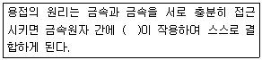
- 인력
- 기력
- 자력
- 응력
(정답률: 65%)
28. 산소 아크 절단을 설명한 것 중 틀린 것은?
- 가스절단에 비해 절단면이 거칠다.
- 직류 정극성이나 교류를 사용한다.
- 중실(속이 찬) 원형봉의 단면을 가진 강(steel)전극을 사용한다.
- 절단 속도가 빨라 철강 구조물 해체, 수중 해체 작업에 이용된다.
(정답률: 53%)
29. 피복 아크 용접봉의 피복 배합제의 성분 중에서 탈산제에 해당하는 것은?
- 산화티탄(TiO2)
- 규소철(Fe-Si)
- 셀룰로오스(Cellulose)
- 일미나이트(TiO2·FeO)
(정답률: 44%)
30. 다음 가스 중 가연성 가스로만 되어있는 것은?
- 아세틸렌, 헬륨
- 수소, 프로판
- 아세틸렌, 아르곤
- 산소, 이산화탄소
(정답률: 64%)
31. 용접법을 크게 융접, 압접, 납땜으로 분류할 때 압접에 해당되는 것은?
- 전자 빔 용접
- 초음파 용접
- 원자 수소 용접
- 일렉트로 슬래그 용접
(정답률: 48%)
32. 정격 2차 전류 200A, 정격 사용률 40%, 아크 용접기로 150A의 용접전류 사용시 허용 사용률은 약 얼마인가?
- 51%
- 61%
- 71%
- 81%
(정답률: 54%)
33. 가스 용접에 대한 설명 중 옳은 것은?
- 아크 용접에 비해 불꽃의 온도가 높다.
- 열집중성이 좋아 효율적인 용접이 가능하다.
- 전원 설비가 있는 곳에서만 설치가 가능하다.
- 가열할 때 열량 조절이 비교적 자유롭기 때문에 박판 용접에 적합하다.
(정답률: 60%)
34. 연강용 피복 아크 용접봉의 피복 배합제 중 아크 안정제 역할을 하는 종류로 묶여 놓은 것 중 옳은 것은?
- 적철강, 알루미나, 붕산
- 붕산, 구리, 마그네슘
- 알루미나, 마그네슘, 탄산나트륨
- 산화티탄, 규산나트륨, 석회석, 탄산나트륨
(정답률: 66%)
35. 가스 가우징용 토치의 본체는 프랑스식 토치와 비슷하나 팁은 비교적 저압으로 대용량의 산소를 방출할 수 있도록 설계되어 있는데 이는 어떤 설계 구조인가?
- 초코
- 인젝트
- 오리피스
- 슬로우 다이버전트
(정답률: 59%)
2과목: 용접재료
36. 가스용접 작업에서 후진법의 특징이 아닌 것은?
- 열 이용률이 좋다.
- 용접속도가 빠르다.
- 용접 변형이 작다.
- 얇은 판의 용접에 적당하다.
(정답률: 66%)
37. 가스 절단시 양호한 절단면을 얻기 위한 품질 기준이 아닌 것은?
- 슬래그 이탈이 양호할 것
- 절단면의 표면각이 예리할 것
- 절단면이 평활하며 노치 등이 없을 것
- 드래그의 홈이 높고 가능한 클 것
(정답률: 73%)
38. 피복 아크 용접봉은 피복제가 연소한 후 생성된 물질이 용접부를 보호한다. 용접부의 보호방식에 따른 분류가 아닌 것은?
- 가스 발생식
- 스프레이형
- 반가스 발생식
- 슬래그 생성식
(정답률: 69%)
39. 직류 아크 용접에서 정극성의 특징 설명으로 맞는 것은?
- 비드 폭이 넓다.
- 주로 박판용접에 쓰인다.
- 모재의 용입이 깊다.
- 용접봉의 녹음이 빠르다.
(정답률: 59%)
40. 스테인리스강의 종류에 해당되지 않는 것은?
- 페라이트계 스테인리스강
- 레데뷰라이트계 스테인리스강
- 석출경화형 스테인리스강
- 마텐자이트계 스테인리스강
(정답률: 45%)
41. 금속 침투법 중 칼로라이징은 어떤 금속을 침투시킨 것인가?
- B
- Cr
- Al
- Zn
(정답률: 56%)
42. 마그네슘(Mg)의 특성을 설명한 것 중 틀린 것은?
- 비강도가 Al 합금보다 떨어진다.
- 구상흑연 주철의 첨가제로 사용된다.
- 비중이 약 1.74 정도로 실용금속 중 가볍다.
- 항공기, 자동차 부품, 전기기기, 선박, 광학기계, 인쇄제판 등에 사용된다.
(정답률: 51%)
43. Al-Si계 합금의 조대한 공정조직을 미세화하기 위하여 나트륨(Na), 수산화나트륨(NaOH), 알칼리염류 등을 합금 용탕에 첨가하여 10~15분간 유지하는 처리는?(오류 신고가 접수된 문제입니다. 반드시 정답과 해설을 확인하시기 바랍니다.)
- 시효 처리
- 폴링 처리
- 개량 처리
- 응력제거 풀림처리
(정답률: 43%)
44. 조성이 2.0~3.0%C, 0.6~1.5%Si 범위의 것으로 백주철을 열처리로에 넣어 가열해서 탈탄 또는 흑연화 방법으로 제조한 주철은?
- 가단 주철
- 칠드 주철
- 구상 흑연 주철
- 고력 합금 주철
(정답률: 35%)
45. 구리(Cu)에 대한 설명으로 옳은 것은?
- 구리는 체심입방격자이며, 변태점이 있다.
- 전기 구리는 O2나 탈산제를 품지 않는 구리이다.
- 구리의 전기 전도율은 금속 중에서 은(Ag)보다 높다.
- 구리는 CO2가 들어 있는 공기 중에서 염기성 탄산 구리가 생겨 녹청색이 된다.
(정답률: 49%)
46. 담금질에 대한 설명 중 옳은 것은?
- 위험구역에서는 급냉한다.
- 임계구역에서는 서냉한다.
- 강을 경화시킬 목적으로 실시한다.
- 정지된 물속에서 냉각시 대류단계에서 냉각속도가 최대가 된다.
(정답률: 69%)
47. 열간가공과 냉간가공을 구분하는 온도로 옳은 것은?
- 재결정 온도
- 재료가 녹는 온도
- 물의 어는 온도
- 고온취성 발생온도
(정답률: 63%)
48. 강의 표준 조직이 아닌 것은?
- 페라이트(ferrite)
- 펄라이트(pearlite)
- 시멘타이트(cementite)
- 소르바이트(sorbite)
(정답률: 64%)
49. 보통 주강에 3% 이하의 Cr을 첨가하여 강도와 내마멸성을 증가시켜 분쇄기계, 석유화학 공업용 기계부품 등에 사용되는 합금 주강은?
- Ni 주강
- Cr 주강
- Mn 주강
- Ni-Cr 주강
(정답률: 56%)
50. 다음 중 탄소량이 가장 적은 강은?
- 연강
- 반경강
- 최경강
- 탄소공구강
(정답률: 73%)
3과목: 기계제도
51. 기계제도에서의 척도에 대한 설명으로 잘못된 것은?
- 척도는 표제란에 기입하는 것이 원칙이다.
- 축척의 표시는 2:1, 5:1, 10:1 등과 같이 나타낸다.
- 척도란 도면에서의 길이와 대상물의 실제길이의 비이다.
- 도면을 정해진 척도값으로 그리지 못하거나 비례하지 않을 때에는 척도를 ‘NS’로 표시할 수 있다.
(정답률: 62%)
52. 다음 배관 도면에 포함되어 있는 요소로 볼 수 없는 것은?
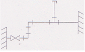
- 엘보
- 티
- 캡
- 체크밸브
(정답률: 60%)
53. 리벳 구멍에 카운터 싱크가 없고 공장에서 드릴 가공 및 끼워 맞추기 할 때의 간략 표시 기호는?
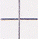
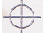
(정답률: 56%)
54. 그림과 같이 지름이 같은 원기둥과 원기둥이 직각으로 만날 때의 상관선은 어떻게 나타나는가?
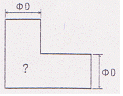
- 점선 형태의 직선
- 실선 형태의 직선
- 실선 형태의 포물선
- 실선 형태의 하이포이드 곡선
(정답률: 54%)
55. 리벳 이음(Rivet Joint) 단면의 표시법으로 가장 올바르게 투상된 것은?
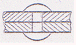
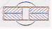
(정답률: 65%)
56. KS 재료기호 중 기계 구조용 탄소강재의 기호는?
- SM 35C
- SS 490B
- SF 340A
- STKM 20A
(정답률: 66%)
57. 다음 중 치수기입의 원칙에 대한 설명으로 가장 적절한 것은?
- 중요한 치수는 중복하여 기입한다.
- 치수는 되도록 주 투상도에 집중하여 기입한다.
- 계산하여 구한 치수는 되도록 식을 같이 기입한다.
- 치수 중 참고 치수에 대하여는 네모 상자 안에 치수 수치를 기입한다.
(정답률: 63%)
58. 다음 용접기호에서 “3” 의 의미로 올바른 것은?
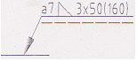
- 용접부 수
- 용접부 간격
- 용접의 길이
- 필릿 용접 목 두께
(정답률: 61%)
59. 다음 중 지시선 및 인출선을 잘못 나타낸 것은?
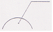
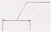
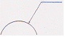
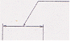
(정답률: 46%)
60. 제 3각 정투상법으로 투상한 그림과 같은 투상도의 우측면도로 가장 적합한 것은?
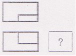
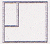
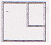
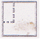
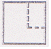
(정답률: 72%)